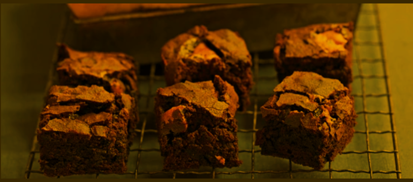

Classic Chocolate Brownies by olive magazine
A classic, gooey chocolate brownie recipe for your kids!

INGREDIENTS
- butter 100g, chopped
- dark chocolate 200g, chopped
- eggs 4
- golden caster sugar 250g
- plain flour 100g
- baking powder 1 tsp
- cocoa 30g
STEPS
- Heat the oven to 180C/fan 160C/gas 4.
- Line a 22cm square brownie tin with baking parchment.
Melt the butter and chocolate together in a microwave or in a bowl
set over a pan of simmering water.
Cool to room temperature.
- Whisk the eggs and sugar together until the mixture is
light and fluffy.
- Fold the chocolate mixture into the egg mixture and sift
on the flour, baking powder and cocoa.
- Fold this in to give a fudgy batter.
- (To ramp it up, add 100g chopped white or milk chocolate chunks
OR 100g toasted, roughly chopped hazelnuts or pecans OR 2 handfuls of
baby marshmallows.)
- Bake for 25-30 minutes or until the top is cracked but the middle
just set. Cool completely, then lift out of the tin and cut.